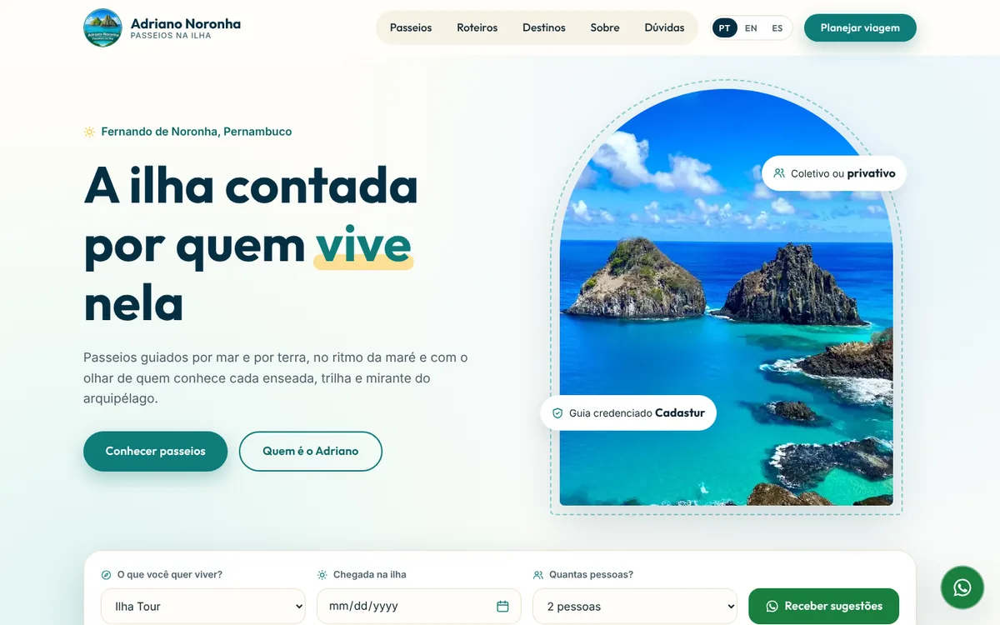

Adriano Noronha
Site para um guia de turismo credenciado de Fernando de Noronha. Apresenta mais de 15 passeios por mar e por terra, sugere roteiros conforme a data e o tamanho do grupo e leva o visitante direto para a reserva pelo WhatsApp, em português, inglês e espanhol.
- React
- React Router
- Vite
- Tailwind CSS